Algunos algoritmos de Aprendizaje Automático son tan complejos que entender cómo llegan a la predicción de una categoría o valor de regresión se convierte en una caja negra. La librería DALEX de R nos permite asomarnos a esa caja negra, entender cómo funcionan estos modelos complejos y poder emitir recomendaciones precisas y cuantificables para mejorar los valores de nuestra variable de respuesta. Es fascinante…
Algunos algoritmos de Aprendizaje Aautomático son tan complejos, que los procesos internos para alcanzar una predicción son difíciles de interpretar. Aunque estos modelos pueden predecir con muy alta presición categorías o valores de una regresión, no explican el razonamiento subyacente ni las variables que influyeron en cada decisión.
Fuera del mundo académico esta “falta de transparencia” genera desconfianza, especialmente en situaciones en las que se necesita entender cómo se alcanzó a una decisión.
🤔 La falta de interpretabilidad de algunos modelos de Aprendizaje Automático genera problemas de confianza, especialmente en aplicaciones críticas como medicina, justicia o finanzas, donde es fundamental entender cómo se tomó una determinada decisión; por ejemplo, clasificar a un paciente como “en riesgo”, conceder un préstamo, etc.
Otros algoritmos, como la regresión logística y modelos de regresión lineal, son más transparentes y nos permiten entender su proceso de toma de decisiones de forma inmediata. Aunque este tipo de modelos predictivos se consideran menos poderosos, suelen ser mucho más veloces y, dependiendo de los datos y el contexto, pueden alcanzar una capacidad predictiva muy similar a la de modelos más complejos (ver nuestro post “¿Más sabe el diablo por viejo?…”).
La librería DALEX (Descriptive mAchine Learning EXplanations) de R, nos permite asomarnos dentro de la caja y entender el proceso de toma de decisiones de algoritmos complejos.
DALEX es una librería de R diseñada para explicar e interpretar modelos de Aprendizaje automático. Proporciona herramientas de interpretación que funcionan con cualquier algoritmo (bosques de árboles aleatorios, redes neuronales, XGBoost, etc.).
Como veremos en este post, estas herramientas nos permiten crear visualizaciones intuitivas para entender tanto predicciones individuales como el comportamiento global del modelo.
En esta ocasión trabajaremos con el conjunto de datos “Kidney Function Health” de Kaggle. Este conjunto de datos es una recopilación sintética, pero realista desde el punto de vista médico, de indicadores de salud relacionados con el funcionamiento del riñón que son utilizados por los nefrólogos para evaluar la función renal, detectar la enfermedad renal crónica temprana y evaluar los factores de riesgo. Este conjunto de datos incluye 5.000 registros de pacientes con 11 características clínicamente relevantes:
| Variable | Descripción |
|---|---|
| Creatinina | Nivel de creatinina en sangre (mg/dL). Valores altos indican una filtración renal reducida. |
| BUN | Nitrógeno uréico en sangre (mg/dL). Niveles elevados indican función renal comprometida. |
| GFR (Objetivo para regresión) | Tasa de filtración glomerular (5–120). Valores más altos indican mejor función renal. |
| Salida de orina | Volumen diario de orina (mL/día). Bajo volumen puede reflejar daño renal. |
| Diabetes | Presencia de diabetes; un factor de riesgo importante para la enfermedad renal crónica. |
| Hipertensión | Estado de presión arterial alta, fuertemente asociado con la progresión de la enfermedad renal crónica. |
| Edad | Edad del paciente (18–90). La función renal disminuye con la edad. |
| Proteína en la orina | Nivel de proteinuria (mg/dL). Alta proteína = daño renal. |
| Ingesta de agua | Consumo diario de agua (litros/día). |
| Medicación | Tipo de medicación: Ninguna, Inhibidor de ECA, ARB, Diurético. |
El objetivo de nuestros modelos predictivos de regresión será predecir la tasa de filtración gromerular (GFR, Glomerular Filtration Rate) a partir de las variables mostradas arriba.
Crearemos algunos modelos predictivos de Aprendizaje Automático y luego nos asomaremos a si interior con las herramientas de la librería DALEX.
La Figura 1 muestra la relación de todas nuestras variables con la tasa de filtración glomerular (GFR), que será la variable objetivo de nuestros modelos de regresión.
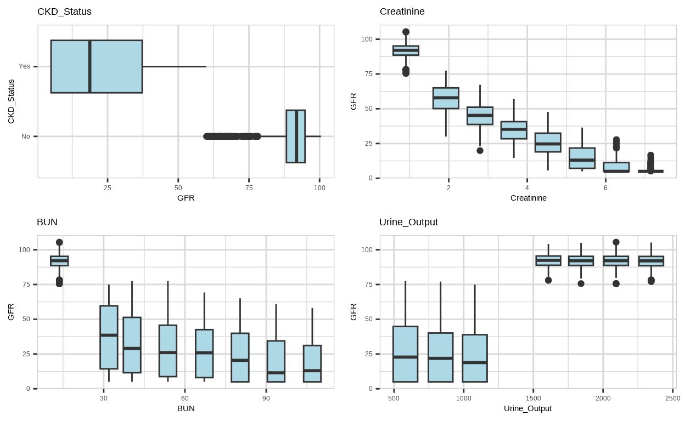
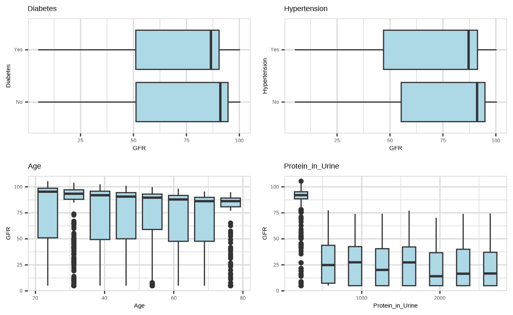
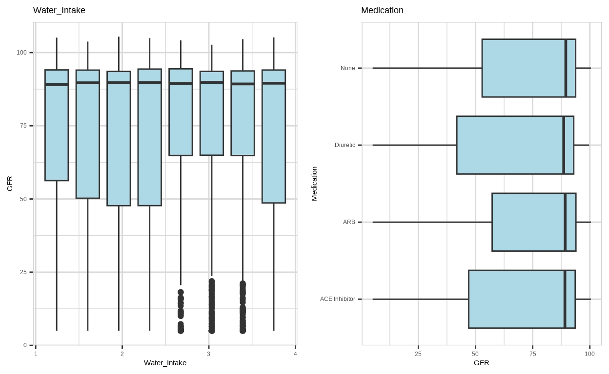
Figura 1. Relación de nuestras variables predictoras con la tasa de filtración glomerular (GFR, Glomerular Filtration Rate). CKD_Status, enfermedad renal crónica; Creatinine, creatinina; BUN, Nitrógeno uréico en sangre; urine_Output, salida de orina; Diabetes, diabetes; Hypertension, hipertensión; Age, edad; Protein_in_Urine, proteína en orina; Water_Intake, ingesta de agua; Medication, tipo de medicación.
En la Figura 1 podemos ver que existe una fuerte relación entre la tasa de filtración glomerular y la presencia de enfermedad renal crónica (CKD), el nivel de creatinina, el nitrógeno uréico en sangre, la salida de orina, y posiblemente la presencia de proteína en la orina.
El proceso de creación de algoritmos de Aprendizaje Automático involucra múltiples pasos: c) limpieza y escalado de los datos, b) separación de conjuntos de datos de entrenamiento y testeo, c) programación de los modelos, d) análisis de métricas de desempeño con los datos de entrenamiento para descartar sobreajuste, e) comparación de distintas métricas de despempeño entre modelos para elegir el mejor o los mejores en la fase de entrenamiento, y pruebas de desempeño con los datos de testeo.
Los modelos de aprendizaje automático creados fueron: regresión lineal, GLMNet, bosque de árboles aleatorios (random forest), XGBoost y SVM (Supported Vector Machines). Todos estos modelos se crearon utilizando la metalibrería Tidymodels de R.
A continuación te ofrecemos una muy breve explicación de cómo funciona cada algoritmo.
La fase de entrenamiento de cada modelo se realizó con validación cruzada con 5 particiones de datos y exploración automatizada de hiperparámetros (variables matemáticas que modulan el funcionamiento de un algoritmo, definidas por el usuario).
Para centrar nuestra atención en las herramientas de interpretación de modelos de Aprendizaje Automático que nos ofrece la librería DALEX, nos saltaremos losm resultados de la fase de entrenamiento y partiremos de los resultados de desempeño de nuestros modelos en la fase final de testeo. En todo caso, puedes ver el script de programación completo en el repositorio de La Casa de Datos en GitHub.
Como estamos trabajando con modelos de regresión, una forma de visualizar el desempeño de nuestros modelos es graficando el valor estimado de la variable de respuesta (la prediccion sobre la tasa de filtración glomerular, GFR) frente a los valores reales (Figura 2).
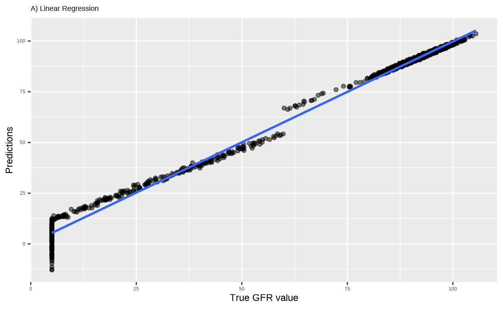
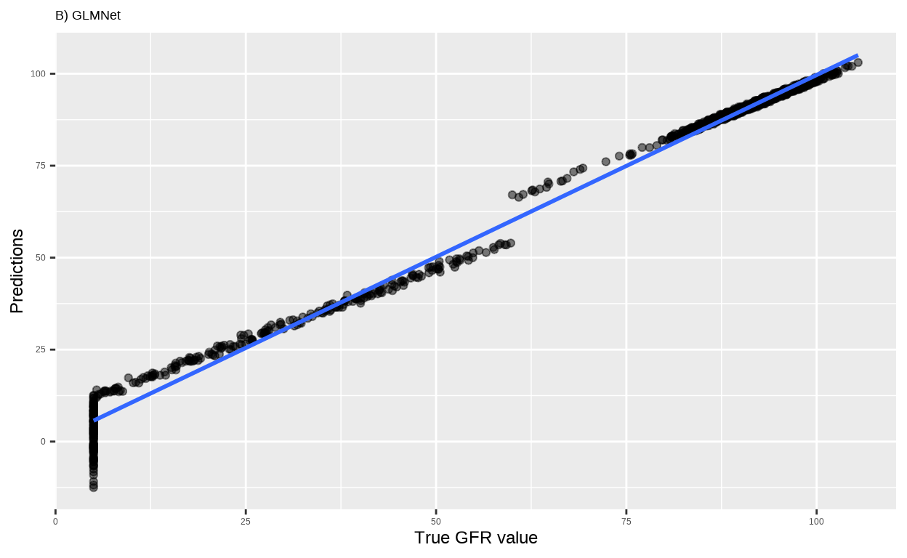
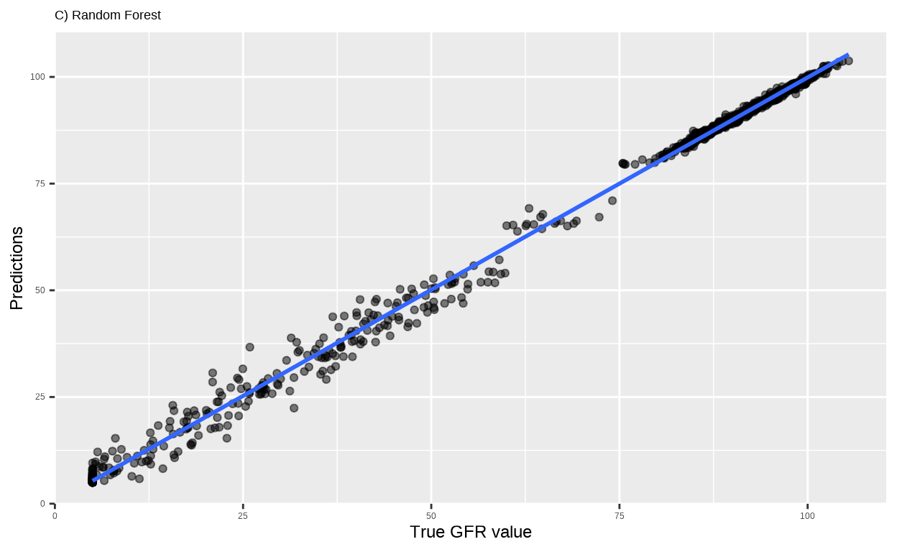
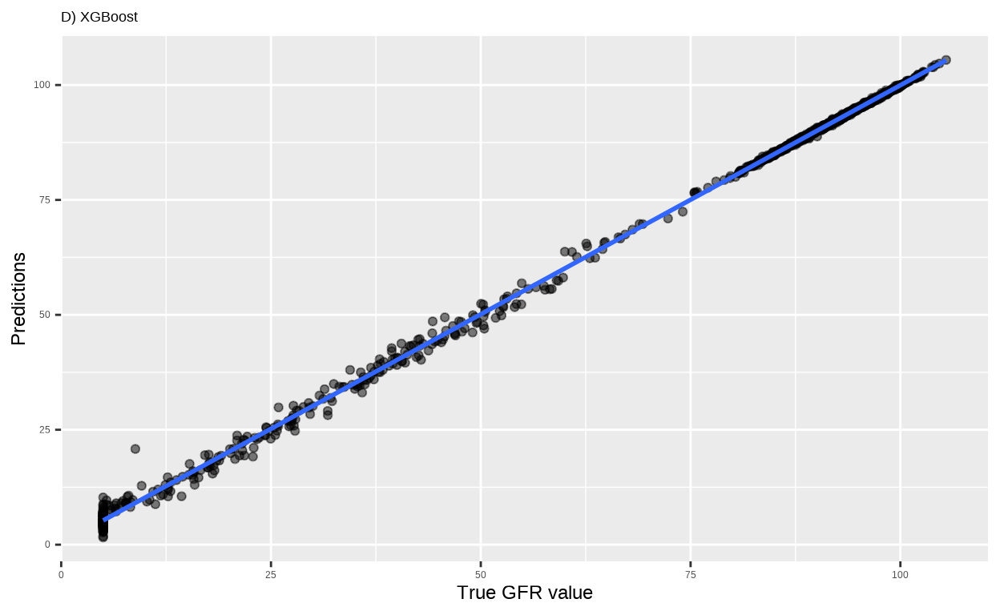
Figura 2. Correlación entre las predicciones de cada modelo (Predictions) y los valores reales de la tasa de filtración glomerular real (True GFR vakue). La linea azul corresponde a la línea de la regresión y cada punto es un caso.
En la Figura 2 vemos que no todos los modelos tuvieron el mismo desempeño; en las gráficas, las predicciones de los modelos de regresión lineal y GMLNet son los que más se alejan de la línea de regresión. Los datos que mejor se ajustan a la línea de regresión son los del modelo XGBoost, seguidos de los del bosque de árboles aleatorios.
Podemos cuantificar cómo de acertadas son las predicciones de cada modelo usando la Raíz del Error Cuadrático Medio de las predicciones (RMSE). Podemos además estimar cómo de bueno es nuestro modelo usando la R² que nos indica la proporción de la variabilidad de nuestros datos que el modelo puede explicar.
La Tabla 1 muestra los resultados de la Raíz del Error Cuadrático Medio; como vemos, los valores de error más bajos corresponden al modelo XGBoost, seguidos del bosque de árboles aleatorios.
Tabla 1. Raíz del error cuadrático medio (rmse). | ||
|---|---|---|
Modelo | Métrica | Valor |
XGBoost | rmse | 0.914601 |
B. de árboles aleatorios | rmse | 1.638310 |
Regresión logística | rmse | 2.608093 |
GLMNet | rmse | 2.628066 |
La Tabla 2 muestra los resultados de R². Aunque todos los modelos explican más del 99% de la variabilidad de los datos, los valores más altos corresponden al modelo XGBoost, seguidos del bosque de árboles aleatorios.
Tabla 2. R² (srq). | ||
|---|---|---|
Modelo | Métrica | Valor |
XGBoost | rsq | 0.9991900 |
B. de árboles aleatorios | rsq | 0.9973807 |
Regresión logística | rsq | 0.9933478 |
GLMNet | rsq | 0.9932610 |
🚀 Los mejores modelos para nuestro conjunto de datos son XGBoost y el bosque de árboles aleatorios, ya que tienen los valores más bajos de error asociado a la regresión.
Como ya vimos en un post anterior (¿Más sabe el diablo por viejo…?), a diferencia de modelos sencillos como la regresión lineal o la regresión logística, los resúmenes de modelos complejos suelen ser bastante crípticos y no parecen nada útiles para entender cómo un modelo de Aprendizaje Automático alcanza una predicción.
A continuación usaremos la librería DALEX para explorar y entender la forma en la que XGBoost y el bosque de árboles aleatorios, nuestros mejores modelos para este conjunto de datos, trabajan para alcanzar una predicción.
DALEX utiliza una interfaz unificada mediante para explicar modelosdeAprendizaje Automático complejos, haciendo transparentes los modelos de caja negra. El objeto de programación base de esta librería se denomina “explainer”.
El código que se muestra a continuación corresponde a la creación de los “explainers” para XGBoost y el bosque de árboles aleatorios.
Una vez creados estos “explainers”, contamos con distintas herramientas para explicar el proceso de decisión de cada modelo.
Los gráficos de importancia de variables (Variable Importance Plots) muestran qué variables tienen mayor impacto en las predicciones de un modelo predictivo de Aprendizaje Automático. DALEX calcula la importancia de cada variable dentro del modelo mediante permutaciones; mezcla aleatoriamente los valores de cada variable y mide cómo se degradan las métricas de desempeño (por defecto, 1-AUC para clasificación y RMSE para regresión). Cuando se modifica una variable, una mayor degradación de la métrica de desempeño es indicativa de mayo importancia de esa variable. Los gráficos VIP permiten identificar fácilmente las variables que son clave para un modelo predictivo.
La Figura 3 muestra los gráficos VIP para el modelo XGBoost y el bosque de árboles aleatorios, con las variables más importantes para cada modelo.
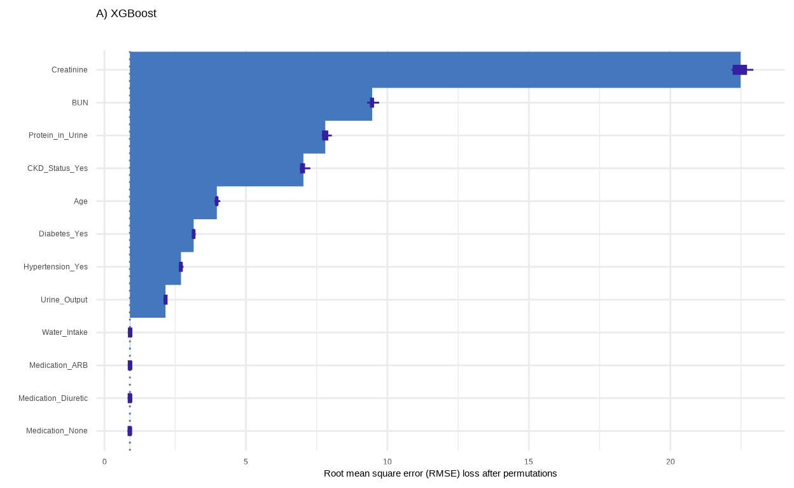
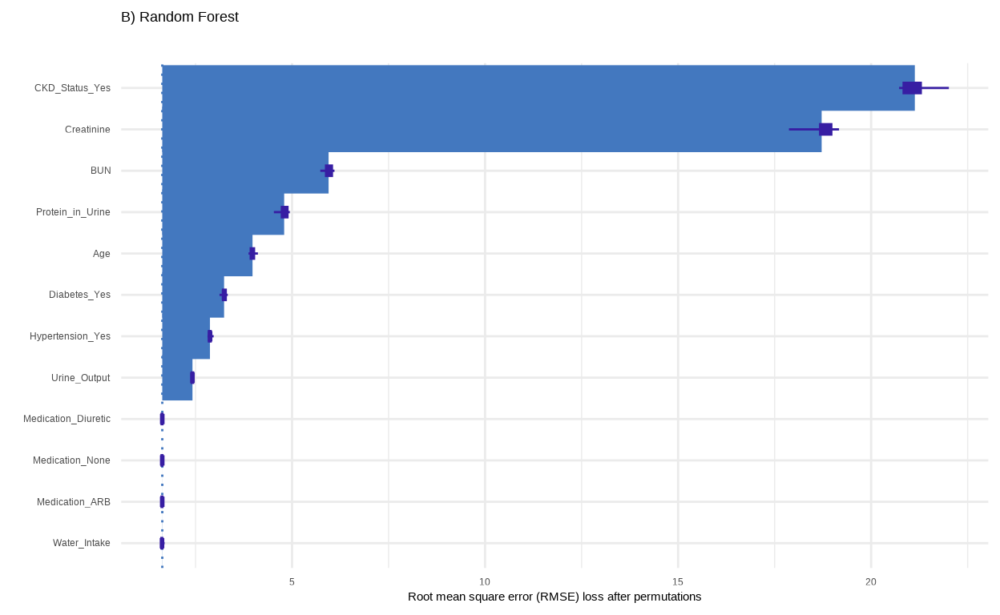
Figura 3. Gráficos tipo VIP para los modelos predictivos XGBoost y bosque de árboles aleatorios. La importancia relativa de cada variable fue estimada a partir la disminución del error cuadrático medio de las predicciones, tras las permutaciones de las variables de entrada (RMSE loss after permutations). Creatine, creatinina; BUN, Nitrógeno uréico en sangre; Protein_in_Urine, proteína en orina; CKD_Status_Yes, presencia de enfermedad renal crónica; Age, edad; Diabetes_Yes, presencia de diabetes; Hypertension_Yes, presencia de hipertensión; Urine_Output, salida de orina; Water_Intake, ingesta de agua; Medication, tipo de medicación (ARB; Diuretic, diuréticos; None, ninguna).
Como podemos ver en la Figura 3, cada modelo asigna una importancia relativa distinta a cada variable; sin embargo, las variables más importantes son las mismas en los dos modelos. Estos resultados coinciden con la exploración visual de nuestros datos (Figura 1), lo que resulta muy tranquilizador.
🔍 Los gráficos tipo VIP nos ayudan a entender de un vistazo las variables que contribuyen en mayor medida a la capacidad de un modelo de Aprendizaje Automático para arrojar una predicción.
Ya tenemos un modelo predictivo, ¡qué bonito! Contamos con gráficos tipo VIP para entender las variables que son importantes para nuestro modelo, ¡qué emoción! Pero… ¿Podemos hacer algo incluso mejor? ¿Tal vez explicar a un paciente EXACTAMENTE cuáles de sus características individuales podrían predecir niveles una tasa de filtración glomerular preocupante?
De nuestros 5000 casos, elegimos dos sujetos al azar, con tasas de filtración glomerular (GFR) baja (Low) o normal (Normal), para el análisis explicativo de nuestros modelos a nivel de caso único.
| GFR | Variable | Valor |
|---|---|---|
| Low (5) | Age | 46.96 |
| Normal (103) | Age | 18 |
| Low (5) | BUN | 107.61 |
| Normal (103) | BUN | 15.51 |
| Low (5) | CKD_Status | Yes |
| Normal (103) | CKD_Status | No |
| Low (5) | Creatinine | 5.83 |
| Normal (103) | Creatinine | 0.64 |
| Low (5) | Diabetes | Yes |
| Normal (103) | Diabetes | No |
| Low (5) | Hypertension | No |
| Normal (103) | Hypertension | No |
| Low (5) | Medication | None |
| Normal (103) | Medication | Diuretic |
| Low (5) | Protein_in_Urine | 1058.17 |
| Normal (103) | Protein_in_Urine | 52.62 |
| Low (5) | Urine_Output | 453.55 |
| Normal (103) | Urine_Output | 1581.49 |
| Low (5) | Water_Intake | 2.24 |
| Normal (103) | Water_Intake | 2.85 |
GFR, tasa de filtración glomerular; Age, edad; BUN, Nitrógeno uréico en sangre; CKD_Status, enfermedad renal crónica; Creatinine, creatinina; Diabetes, diabetes; Hypertension, hipertensión; Medication, tipo de medicación; Protein_in_Urine, proteína en orina; Urine_Output, salida de orina; Water_Intake, ingesta de agua
Las Figuras 4 y 5 muestras gráficos de descomposición del valor estimado de la regresión para los dos sujetos, y para cada uno de los mejores modelos (XGBoost y bosque de árboles aleatorios). La función predict_parts() de DALEX nos devuelve los datos necesarios para crear gráficos barras con las contribuciones de cada variable al valor estimado de tasa de filtración glomerular (GFR) para cada modelo.
El punto de partida en el gráfico es el término independiente (intercept), que representa el valor predicho de la variable de respuesta cuando todas las variables predictoras son cero. Aunque el término independiente no tiene mucho sentido en la gran mayoría de los modelos de regresión, podemos visualizarlo como valor de la variable de respuesta sobre el que van a actuar las variables predictoras. En nuestro conjunto de datos el término independiente de los dos modelos (73.42 con XGBoost y 73.39 con el bosque de árboles) se aproxima a la media de la tasa de filtración glomerular de los 5000 casos que componen nuestra muestra (73.25).
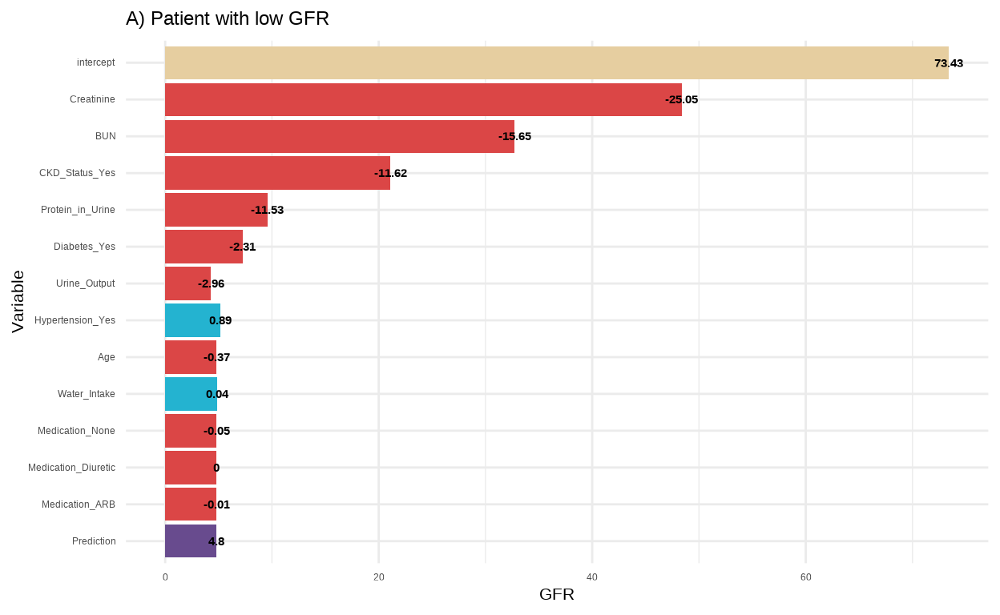
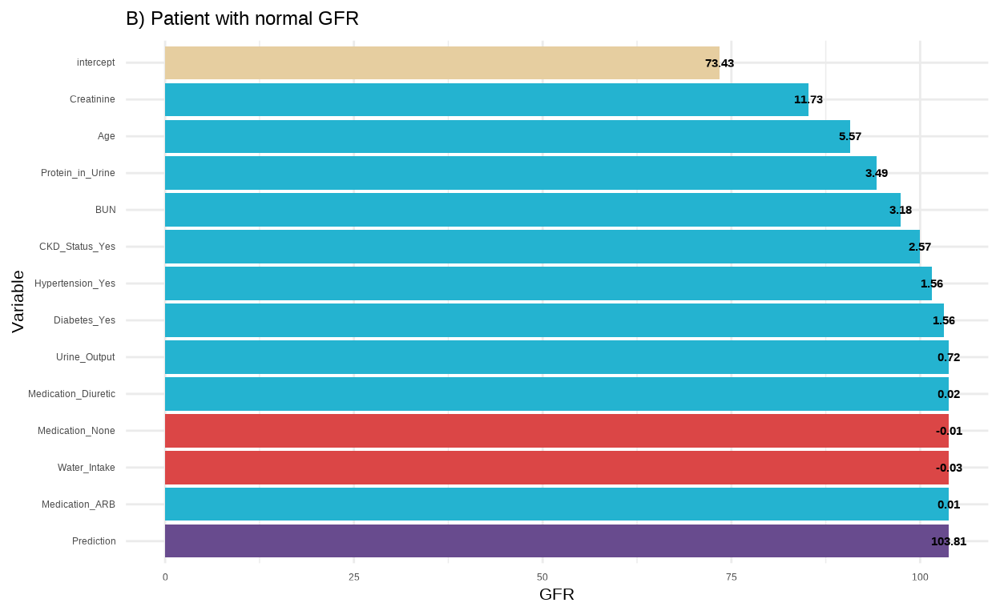
Figura 4. Descomposición del valor de tasa de filtración glomerular (GFR) estimado por el modelo XGBoost. A) Paciente con tasa de filtración glomerular baja (low GFR). B) Paciente con tasa de filtración glomerular normal (normal GFR). Las barras azules indican una contribución positiva al valor de la predicción, las rojas indican una contribución negativa. El valor de la predicción para la tasa de filtración glomerular corresponde a la barra violeta. La contribución de cada variable al valor de la predicción se muestra a la derecha de la cada barra. El valor de partida es el término independiente de la regresión (intercept, barra amarilla). Creatine, creatinina; BUN, Nitrógeno uréico en sangre; Protein_in_Urine, proteína en orina; CKD_Status_Yes, presencia de enfermedad renal crónica; Age, edad; Diabetes_Yes, presencia de diabetes; Hypertension_Yes, presencia de hipertensión; Urine_Output, salida de orina; Water_Intake, ingesta de agua; Medication, tipo de medicación (ARB; Diuretic, diuréticos; None, ninguna).
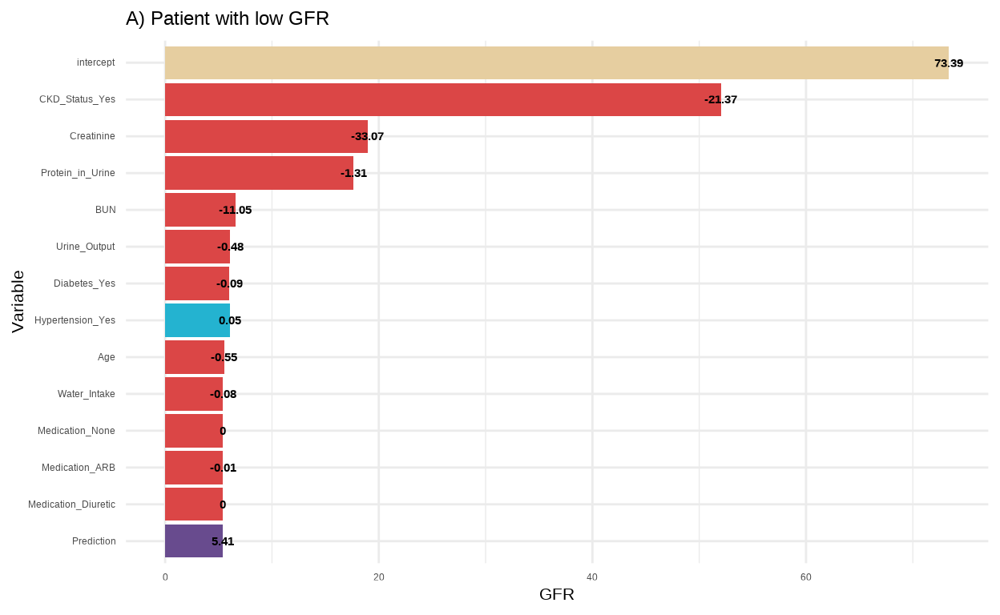
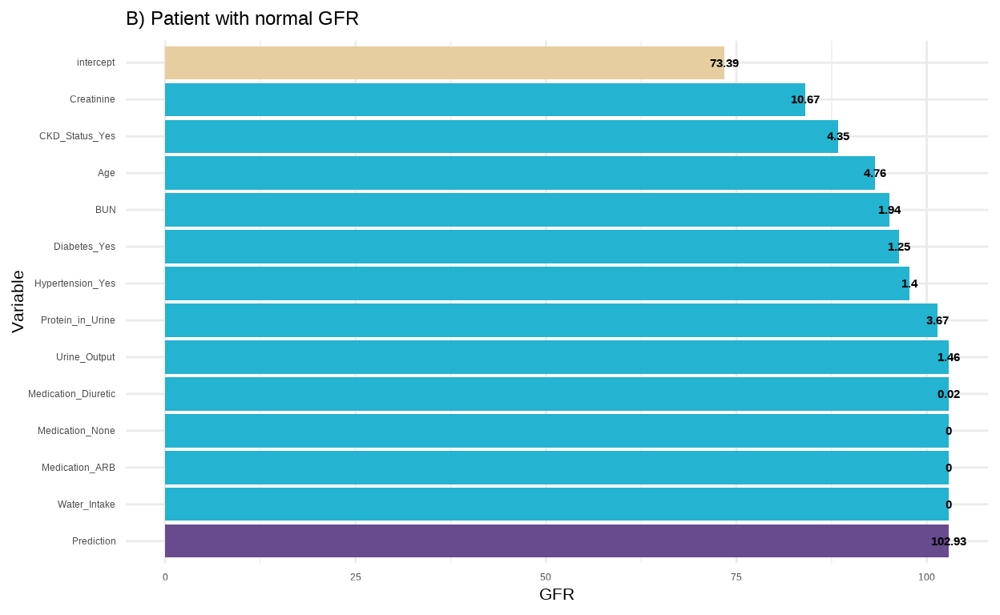
Figura 5. Descomposición del valor de tasa de filtración glomerular (GFR) estimado por el modelo de bosque de árboles aleatorios. A) Paciente con tasa de filtración glomerular baja (low GFR). B) Paciente con tasa de filtración glomerular normal (normal GFR). Las barras azules indican una contribución positiva al valor de la predicción, las rojas indican una contribución negativa. El valor de la predicción para la tasa de filtración glomerular corresponde a la barra violeta. La contribución de cada variable al valor de la predicción se muestra a la derecha de la cada barra. El valor de partida es el término independiente de la regresión (intercept, barra amarilla). Creatine, creatinina; BUN, Nitrógeno uréico en sangre; Protein_in_Urine, proteína en orina; CKD_Status_Yes, presencia de enfermedad renal crónica; Age, edad; Diabetes_Yes, presencia de diabetes; Hypertension_Yes, presencia de hipertensión; Urine_Output, salida de orina; Water_Intake, ingesta de agua; Medication, tipo de medicación (ARB; Diuretic, diuréticos; None, ninguna).
Las Figuras 4 y 5 muestran que los valores de la tasa de filtración glomerular estimados por ambos modelos para los dos pacientes (4.799 con XGBoost y 5.41 con el bosque de árboles aleatorios para el paciente con tasa de filtración glomerular baja; 103.808 con XGBoost y 102.93 con el bosque de árboles aleatorios para el paciente con tasa de filtración glomerular normal) se acercan mucho a los valores reales (5.00 para el paciente elegido con una tasa de filtración baja y 103.00 para el paciente con una tasa de filtración normal).
En ambas figuras vemos además como casi todas las variables que son importantes para los dos modelos (Figura 3) contribuyen a reducir (Figuras 4A y 5A) o aumentar (Figuras 4B y 5B) progresivamente el valor de la predicción, dependiendo del paciente.
🔬 En nuestro contexto, los gráficos de descomposición del valor de la regresión podrían ayudarnos a establecer un plan de cuidados personalizado para el paciente, orientándonos a disminuir sus niveles de creatinina, nitrógeno uréico en sangre y proteínas en la orina, pues estas variables son las que reducen en mayor medida el valor de la predicción para la tasa de filtración glomerular.
Los gráficos de importancia de variables (Figura 3) y los gráficos de descomposición del valor de la regresión (Figuras 4 y 5) nos ayudan a comprender qué variables son las más importantes para las predecir una variable de respuesta, tanto a nivel global (gráficos de importancia de variables) como a nivel de casos individuales (gráficos de descomposición de la regresión). A través del Aprendizaje Automático, podemos usar esta información para modelar cómo cambiaría el valor de una predicción al modificar los valores de variables predictoras específicas.
El análisis Ceteris Paribus examina cómo cambios en una variable afectarían la predicción de un modelo, manteniendo todas las demás variables constantes (i.e., Ceteris Paribus). La función predict_profile() de DALEX nos devuelve los datos necesarios para generar gráficos Ceteris Paribus para casos individuales.
La Figura 6 muestra gráficos Ceteris Paribus para dos pacientes elegidos al azar dentro del grupo de pacientes con baja tasa de filtración glomerular. Modelamos los valores de la predicción de esta variable en función de las variables que ya hemos identificado como las más importnates: creatinina, nitrógeno uréico en sangre y proteína en la orina. Para mejorar las comparaciones, en el análisis Ceteris Paribus, los valores de las variables se muestran como puntuaciones z (valores estandarizados). Para regresar a las unidades de la escala original, podemos multiplicar los valores por la desviación estándar y sumar la media del conjunto de datos.
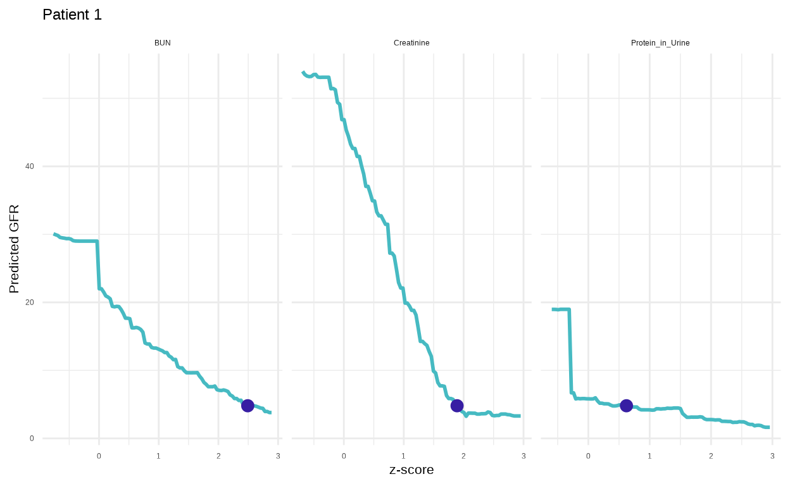
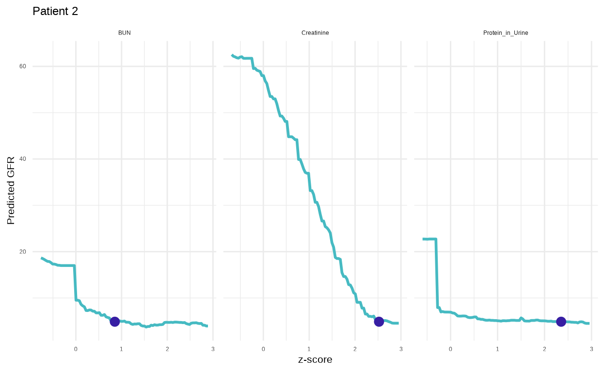
Figura 6. Gráficos Ceteris Paribus para dos pacientes con baja tasa de filtración glomerular. El eje X corresponde a las puntuaciones z (z-score, valores escalados) de cada una de las variables. El eje Y corresponde al valor de la predicción (prediction) de la tasa de filtración glomerular asociada a cada puntuación z. Los puntos violeta corresponden al valor real de z asociado a cada variable. Paciente 1 (Patient 1): BUN, z = 2.49 = 108 mg/dL; Creatinine, z = 1.89 = 5.83 mg/dL; Pretein_in_Urine, z = 0.621 = 1058 mg/dL. Paciente 2 (Patient 2): BUN, z = 0.852 = 57 mg/dL; Creatinine, z = 2.52 = 7.11 mg/dL; Pretein_in_Urine, z = 2.35 = 2493 mg/dL. Creatine, creatinina; BUN, Nitrógeno uréico en sangre; Protein_in_Urine, proteína en orina.
La Figura 6 muestra que, manteniendo el resto de las variables sin cambios y teniendo en cuenta los valores reales del resto de las variables asociadas a CADA paciente, para mejorar la tasa de flitración glomerular, disminuir los valores del nitrógeno uréico en sangre (BUN) tendría un efecto mayor en el paciente 1 que en el paciente 2.
La Figura 6 también revela que la mejor estrategia para mejorar la tasa de filtración glomerular sería disminuir los niveles de creatinina en los dos pacientes. Aunque los niveles de proteína en la orina parecen tener un efecto marginal, parece haber un umbral, al rededor de z = 0.3 = 782 mg/dL, por debajo del cual el valor estimado de la tasa de filtración glomerular mejora considerablemente.
🚀 Combinando los gráficos de descomposición de la regresión con el análisis Ceteris Paribus podemos ofrecer recomendaciones muy precisas para establecer estrategias informadas que nos permitan modificar la variable de respuesta de la forma más inteligente posible.
A pesar de que el funcionamiento interno de algoritmos como XGBoost y el bosque de árboles aleatorios es complejo y nada transparente sobre la forma en la que alcanzan una predicción, la librería DALEX nos permite identificar fácilmente:
Las variables que son más importantes para hacer predicciones sobre la variable de respuesta.
A nivel de casos individuales, podemos cuantificar la contribución de cada variable predictora al valor falor de la predicción.
También a nivel de casos individuales, podemos modelar cómo cambiaría el valor de la predicción al modificar los valores de variables predictoras específicas.
Combinando esta información, sin importar lo complejo que sea el modelo de Aprendizaje Automático, podemos ofrecer a nivel de casos individuales, recomendaciones precisas y cuantificables para modificar la variable de respuesta a través de estrategias informadas.
El código completo de este análisis está disponible en el repositorio de La Casa de Datos en Github.